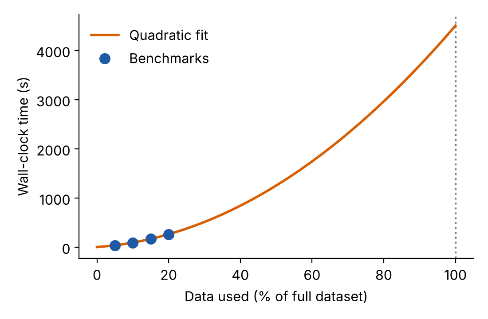

Benchmarking your code
A benchmark is a small, controlled test of your code that you can use to predict what the full project will need. The goal is not to run everything, but to run just enough to learn how time and memory change as the problem grows.
The benchmarking workflow
- Create representative test cases: smaller versions of your real problem, using the same type of data and the same code path
- Test the scaling: run with several sizes (e.g. 2%, 4% and 8% of the data) and see how the time grows
- Extrapolate carefully: use the scaling you observed to predict the full problem, and add safety factors
- Document your environment: software versions, loaded modules, and the machine you used
- Run end-to-end tests, including every step (reading the data, computing, writing results), because I/O can be a significant cost
- Benchmark on the same type of hardware you will use for the real runs
Essential measurement tools
GNU time
The GNU time command runs your program and reports the resources it used. Note that you need to call it by its full path, /usr/bin/time, because most shells have a simpler built-in command with the same name.
# Basic timing with detailed output
/usr/bin/time -v my_program input.dat
# Custom format for logging
/usr/bin/time -f 'wall=%e user=%U sys=%S maxRSS=%M' my_program input.dat| Output | Format code | Meaning |
|---|---|---|
| Elapsed (wall-clock) time | %e (seconds) or %E (h:mm:ss) |
What a stopwatch would measure |
| User time | %U |
CPU time spent in your code |
| System time | %S |
CPU time spent in the operating system on your behalf (e.g. reading files) |
| Maximum resident set size | %M |
Peak memory used, in kilobytes |
If /usr/bin/time is not available (for example on macOS), the shell built-in time my_program still gives you the elapsed, user and system times, but not the memory. In Python you can read the peak memory of a process with the standard resource module, as the exercise script of this course does.
Example: benchmark script
The script below runs a program with three different data sizes and saves the measurements to a log file, so they can be analysed later:
#!/bin/bash
for size in 2 4 8; do
echo "Testing ${size}% data size..."
/usr/bin/time -o benchmark_results.log -a \
-f "size=${size}pct wall=%e user=%U sys=%S maxRSS_KB=%M" \
my_simulation --input data_${size}pct.csv \
--output results_${size}pct.dat
doneThe options -o benchmark_results.log -a tell time to append its report to the log file, which keeps the measurements separate from anything your program prints.
Allowing for sources of variability
Run times are never exactly the same twice: other users share the node or the file system, and your own code may use random numbers. Particularly when your tests are short, you should repeat each measurement a few times, for example by adding an extra nested loop:
for size in 2 4 8; do
for run in 1 2 3; do
/usr/bin/time -o benchmark_results.log -a \
-f "size=${size}pct run=${run} wall=%e user=%U sys=%S maxRSS_KB=%M" \
my_simulation --input data_${size}pct.csv \
--output results_${size}pct_run${run}.dat
done
doneWorked example: image processing
An image processing pipeline that
- loads images from disk,
- runs an object detection model, and
- saves the results.
Goal: process 10,000 images and estimate the resources needed.
Step 1: create test datasets
Make smaller subsets of the full dataset by random sampling, so that they are representative of the whole:
# Create subsets of your full dataset
mkdir test_data_5pct test_data_10pct test_data_15pct
# Randomly sample (adjust the numbers for your case)
shuf -n 500 full_image_list.txt > test_data_5pct/image_list.txt
shuf -n 1000 full_image_list.txt > test_data_10pct/image_list.txt
shuf -n 1500 full_image_list.txt > test_data_15pct/image_list.txtStep 2: run the benchmarks
#!/bin/bash
module load languages/python/3.7.12
for size in 5 10 15; do
echo "=== Testing ${size}% dataset ==="
for run in 1 2 3; do
echo "Run $run..."
/usr/bin/time -o timing_results.log -a \
-f "${size}pct run${run}: wall=%e user=%U sys=%S maxRSS_KB=%M" \
python image_pipeline.py \
--input test_data_${size}pct/ \
--output results_${size}pct_run${run}/
done
doneStep 3: analyse the results
# Extract the timing data
grep "wall=" timing_results.log5pct run1: wall=135.21 user=121.45 sys=12.33 maxRSS_KB=2048000
5pct run2: wall=138.04 user=123.12 sys=13.01 maxRSS_KB=2051000
5pct run3: wall=134.77 user=120.88 sys=12.40 maxRSS_KB=2049000
10pct run1: wall=270.55 user=243.90 sys=24.78 maxRSS_KB=2052000
...
15pct run1: wall=405.38 user=366.22 sys=36.51 maxRSS_KB=2055000
...Averaging the three runs of each size gives
| Data used | Wall time | Compared with 5% |
|---|---|---|
| 5% | ~135 s | 1× |
| 10% | ~270 s | 2× |
| 15% | ~405 s | 3× |
Doubling and tripling the data doubled and tripled the time, so the scaling is linear. The memory barely changes (about 2 GB in every case), so it does not depend on how many images we process. Extrapolating to the whole dataset (100%, i.e. 20 times the 5% test):
\[ 135 \text{ s} \times 20 = 2700 \text{ s} = 45 \text{ minutes} \]
and we should ask for about 2 GB of memory (plus a safety margin) for the job.
If it is not linear
If the times do not grow in proportion to the data size, you can fit a curve through your measurements and use it to predict the full-size runtime. A polynomial of order 2 or 3 is generally a good option for capturing non-linear trends. You can do this in a spreadsheet (add a trendline to the chart and choose to display the equation) or in a few lines of Python:
import numpy as np
percent = np.array([5, 10, 15, 20])
wall = np.array([40.0, 95.0, 170.0, 265.0]) # seconds
coeffs = np.polyfit(percent, wall, deg=2) # quadratic trend
prediction = np.polyval(coeffs, 100) # forecast for 100% of the data
print(f"Predicted wall time with all the data: {prediction / 60:.0f} minutes")
Extrapolating far beyond the range you measured is risky: here we predict at 100% from tests that stop at 20%, and small differences in the fit become large differences in the forecast. Use more test sizes (or larger ones) when your tests are a small fraction of the full problem, and always add a safety factor when converting the prediction to a resource request.